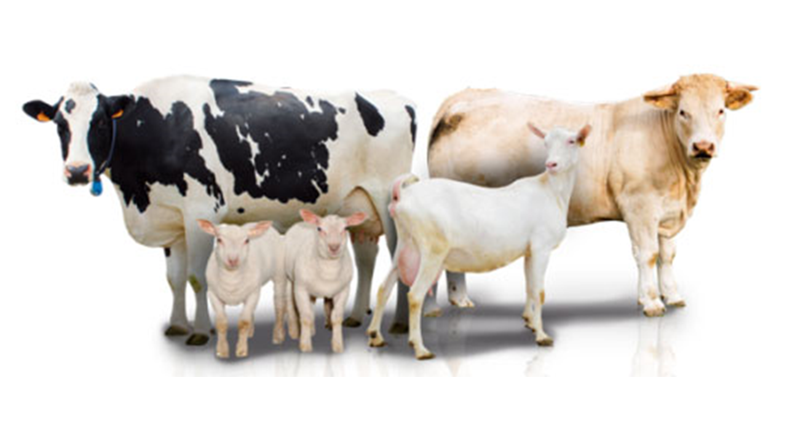
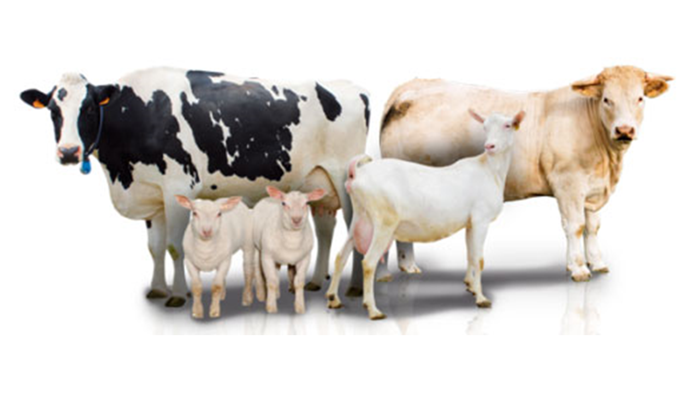

Productos
Línea Huevos de Gallina
Nuestra granja se enorgullece de ser un pilar en la comunidad local, ofreciendo productos frescos y de alta calidad directamente a nuestros vecinos. Al vender huevos frescos, garantizamos que las familias tengan acceso a una fuente confiable de proteínas esenciales como lo es el huevo de gallina, alimento por excelencia, de gran valor alimentario y económico. Nuestros huevos son recolectados diariamente y pasan por estrictos controles de calidad para asegurar su frescura y seguridad, lo que contribuye a una alimentación más saludable en la comunidad.
Nuestra granja también se compromete a fomentar el desarrollo económico local al crear empleo, inicialmente a las familias que iniciaron el proyecto, pero también potencialmente a gente que se nos va sumando en el día a día, brindándoles no solo una fuente de ingresos estable, sino también la oportunidad de adquirir habilidades valiosas en el rubro.
En nuestra tienda, ofrecemos una amplia variedad de huevos frescos de gallina, tanto blancos como marrones, cada uno con sus propias características y beneficios únicos. La alimentación de nuestras gallinas ponedoras es un factor crucial que afecta tanto la cantidad como la calidad de los huevos producidos. Las dietas están formuladas para proporcionar los nutrientes necesarios, incluyendo proteínas, vitaminas y minerales, para mantener la salud de las aves y optimizar la producción de huevos.
Los huevos blancos, provenientes de gallinas de razas como la Leghorn, son conocidos por su cáscara más resistente y su sabor suave y delicado. Son ideales tanto para su consumo directo como para la preparación de platos dulces y salados, añadiendo un toque de frescura y calidad a tus recetas favoritas.
Por otro lado, los huevos marrones, procedentes de gallinas de razas como la Lohman, se destacan por su cáscara de tono más oscuro y su rica y vibrante yema. Estos huevos suelen tener un sabor ligeramente más pronunciado, perfecto para aquellos que disfrutan de un toque más robusto en sus platos.
Uno de los aspectos importantes en la producción de huevos es la calidad de la cáscara. La dureza y la integridad de la cáscara son vitales para la protección del contenido interno del huevo y para garantizar la frescura y la seguridad alimentaria. Eso, ayudado por una rotación permanente del stock y la venta rápida de los productos, asegura que nuestros clientes siempre disfruten de un producto fresco que no tiene alteradas sus cualidades.
Ya sea que elijas los huevos blancos o los marrones, puedes confiar en la frescura y la calidad de nuestros productos. Criados en entornos controlados y alimentados con una dieta balanceada, nuestros huevos son una excelente fuente de proteínas y nutrientes esenciales. ¡Haz tu pedido hoy y disfruta de la excelencia de los huevos frescos en cada bocado!
Línea de Alimentos Balanceados para Animales de Granja
 

Ofrecemos balanceados de producción propia, pensados para la producción de huevos con gallinas de alta postura. Adecuando la dieta a la época del año, aseguramos un excelente porcentaje de postura.
Como recomendación general, siempre recomendamos que estos balanceados sean suministrados en forma seca y en la cantidad que el animal lo demande. Las gallinas en todos sus estadíos consumen el animal en la medida que lo necesitan, suministrar una cantidad menor puede resultar en un crecimiento no ideal, o en porcentajes menores de postura.
Acompañando a sus animales en todos sus estadios, ofrecemos tres tipos de alimentos:
-
Alimento para Ponedoras Bebé: Orientado a alimentar pollas recién nacidas, tiene un particularmente alto contenido en proteínas y contiene todas las vitaminas y nutrientes necesarios para asegurar que sus pollas tengan un crecimiento ideal en sus primeras etapas de vida. Se recomienda el suministro de este alimento hasta las 11 semanas de vida
-
Alimento de Segunda Etapa (Recría): Pensado para pollas de 11 semanas de vida, este alimento ayudará a recriar sus pollas de manera ideal, formando su organismo para que lleguen a la etapa de postura en óptimas condiciones, con un buen tamaño, y asegurando una buena duración y vejez del animal en su etapa de postura.
Se recomienda el suministro de este alimento desde las 11 semanas de vida, hasta las 18 semanas o la postura de los primeros huevos del lote, lo que suceda primero
-
Alimento para Ponedoras en Postura: Pensado para la etapa de más demanda de las gallinas ponedoras, la plena postura. Es un alimento con alto tenor de proteínas y una balanceada cantidad de calorías suministradas, buena fibra y una adecuada cantidad de micronutrientes. Todos estos nutrientes son utilizados y consumidos de manera cíclica por la producción de huevos, la cual, desde un punto de vista metabólico, es altamente demandante para el animal
Este alimento se le puede suministrar de manera continua desde que el animal comienza a poner huevos, hasta el fin de la postura.
Producimos alimentos orientados a obtener un pollo de carne sabroso, con bajo tenor graso. En caso de criar pollos de buena raza, parrilleros o doble pechuga, se asegura el obtener un pollo de buen tamaño (~2.5kg de peso vivo) en un período de 6-8 semanas.
Para asegurar dichos tiempos, además de cuidar la alimentación se debe tener especial cuidado en la sanidad y las temperaturas manejadas, especialmente en las primeras semanas de vida del animal
Se recomienda suministrar en abundancia el alimento en las primeras etapas de vida, y manejar con prudencia las cantidades en el segundo mes en la terminación, en caso de ver crecimiento muy acelerado, proporcionar moderadamente el alimento para evitar problemas de mortandad por obesidad además de asegurar un rendimiento ideal de los alimentos y evitar un suministro ineficiente.
-
Alimento Iniciador: Recomendado para pollos recién nacidos, es particularmente alto en proteínas y contiene las vitaminas y micronutrientes ideales para asegurar un crecimiento parejo de todo el lote de pollitos
Este alimento suele suministrarse hasta los 20 días de vida, aunque puede estirarse a 25 días cuando se cría en invierno y las temperaturas pueden no haber sido ideales, o en casos donde el lote parece no haber crecido lo suficiente para su tercer semana de vida.
-
Alimento Terminador: Recomendado para el engorde y terminación de los pollos parrilleros, se suministra con un pollo ya crecido y está orientado a terminar de formar la carne del animal.
Para la alimentación de cerdos, contamos con una línea que abarca todas las necesidades de nuestros productores porcinos. Todos nuestros balanceados para cerdos estan estructurados en una dieta balanceada que garantiza el crecimiento ideal de sus animales, y se suplementan con premezclas de los mejores laboratorios de nutrición animal, logrando suplir todos los requerimientos de vitaminas, aminoácidos y proteínas que pueda llegar a necesitar el animal.
-
Alimento Iniciador: Ideal para arrancar el destete de los lechones, y suministrado hasta su faena en caso de querer obtener lechones para carne, o hasta los 18-20 kg de peso vivo en caso de querer criar un cerdo adulto. Este balanceado destaca por la velocidad de crecimento que logra en lechones, además del bajo tenor graso que resultan tener dichos animales. Preparado con premezclas que aportan inclusive más proteínas y todos los micronutrientes necesarios.
-
Alimento para Cerdas Lactantes: Suplemento ideal para la etapa de mayor demanda de las cerdas, este balanceado ayuda a las cerdas a la producción de una buena cantidad de leche para sus camadas de lechones, además de mantener a la madre, evitando su desnutrición. Este alimento está recomendado para cerdas cercanas a parición y se suministra hasta el destete de los lechones.
-
Alimento de Engorde y Terminación: Alimento de buen rendimiento para engorde de cerdos, recomendado para todo animal mayor a 20kg, ideal para engordarlos y llevarlos hasta su faena.
También contamos con balanceados de rumiantes, pensados principalmente para el engorde de vacunos, ovinos o bovinos en etapa de Recría o Terminación. Este alimento, muy demandado como suplemento a los forrajes verdes, tiene un alto rinde y viene con premezclas que cubren todo requerimiento nutricional, ademas de evitar la acidosis.